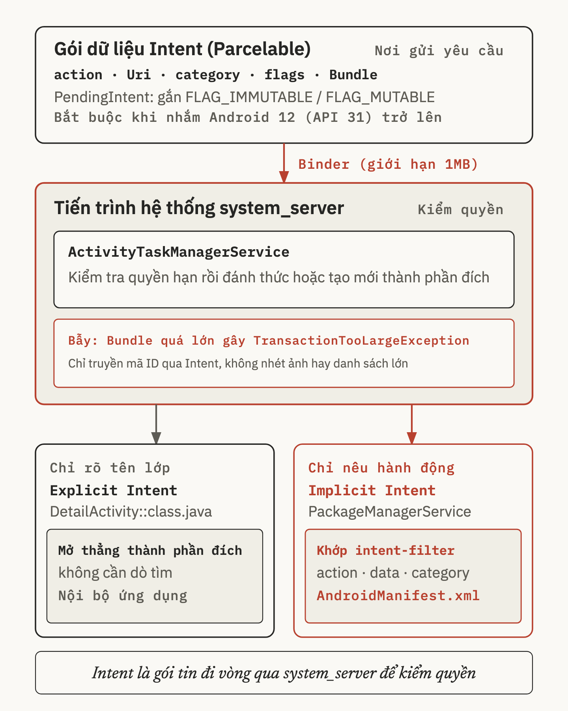

Intent & intent filter
Bản 30 giây
Khi bấm đường dẫn trong ứng dụng nhắn tin để mở trình duyệt, hai tiến trình khác nhau không thể gọi hàm của nhau. Intent đóng gói yêu cầu và dữ liệu thành một bức thư gửi qua hệ điều hành để nhờ mở màn hình đích. Nhờ vậy, các màn hình và các ứng dụng gọi được nhau mà không cần biết tên lớp code của nhau.
Cần biết trước
Vấn đề buộc nó ra đời
Trên máy tính truyền thống, muốn mở ứng dụng khác, bạn phải gọi thẳng đường dẫn tệp chạy cố định trên ổ đĩa. Nhưng trên Android từ bản 1.0 (2008), người dùng có thể cài trình duyệt khác và chọn nó thay bản có sẵn.
Ngoài ra, mỗi ứng dụng Android chạy trong một tiến trình riêng biệt nên không thể truyền con trỏ bộ nhớ sang cho nhau. Nếu ứng dụng gọi cứng tên lớp của ứng dụng khác, chỉ cần ứng dụng kia đổi tên hay bị gỡ là code sẽ gãy.
Kỹ sư Android tạo ra Intent và bộ lọc intent-filter để tách rời nơi gửi yêu cầu với nơi thực hiện. Bạn chỉ cần mô tả hành động muốn làm, còn hệ điều hành sẽ dò tìm thành phần phù hợp nhất đang có trên máy.
Nó thực sự là cái gì
Intent không phải là lệnh gọi hàm trực tiếp giữa hai màn hình trong bộ nhớ của ứng dụng. Thực chất, nó là một gói dữ liệu đóng gói (Parcelable) đi qua kênh liên tiến trình Binder lên tiến trình hệ thống system_server. Tại đó, hệ điều hành kiểm tra quyền hạn rồi mới đánh thức hoặc tạo mới thành phần đích để giao gói tin này.
Cơ chế

Một Intent chứa tên thành phần đích, chuỗi hành động (action), địa chỉ dữ liệu (Uri), nhóm (category), cờ (flags) và gói dữ liệu Bundle. Với Explicit Intent (chỉ rõ tên lớp), ActivityTaskManagerService trong system_server mở thẳng thành phần đó mà không cần dò tìm. Với Implicit Intent (chỉ nêu hành động), PackageManagerService đối chiếu cả ba mục action, data và category với các intent-filter trong AndroidManifest.xml. Nếu cần nhờ ứng dụng khác chạy hộ Intent sau này với quyền của ứng dụng bạn, hệ thống cấp một thẻ PendingIntent.
Đánh đổi
Tách rời nơi gọi và nơi nhận giúp ứng dụng dùng lại được màn hình máy ảnh hay trình duyệt có sẵn trên máy. Đổi lại, mọi dữ liệu trong Bundle phải chép qua bộ đệm Binder có giới hạn chung khoảng 1MB cho cả tiến trình. Hơn nữa, thành phần mở cửa đón Implicit Intent từ bên ngoài sẽ dễ bị ứng dụng lạ gửi dữ liệu giả mạo vào.
Nguyên lý gốc
Các thành phần độc lập không giữ tham chiếu trực tiếp tới nhau. Chúng giao tiếp bằng cách gửi gói tin mô tả yêu cầu qua trung gian.
Key insight
Intentkhông gọi thẳng màn hình đích trong bộ nhớ, mà là gói tin đi vòng quasystem_serverđể hệ điều hành kiểm quyền.
Khuôn mẫu chuẩn
val shareIntent = Intent(Intent.ACTION_SEND).apply {
type = "text/plain"
putExtra(Intent.EXTRA_TEXT, "https://developer.android.com")
}
startActivity(Intent.createChooser(shareIntent, "Chia sẻ liên kết"))
val notifyIntent = Intent(context, DetailActivity::class.java)
val pendingIntent = PendingIntent.getActivity(
context, 0, notifyIntent,
PendingIntent.FLAG_IMMUTABLE or PendingIntent.FLAG_UPDATE_CURRENT
)
Bẫy & ranh giới
Nhét ảnh hay danh sách lớn vào Intent sẽ tràn bộ đệm 1MB của Binder và sập với TransactionTooLargeException, nên chỉ truyền mã ID. Khi ứng dụng nhắm Android 12 (API 31), quên cờ FLAG_IMMUTABLE hoặc FLAG_MUTABLE trên PendingIntent sẽ ném IllegalArgumentException. Thiếu android:exported khi có intent-filter thì APK không cài được. Gọi Implicit Intent mà không có ứng dụng nào khớp trên máy cũng làm ứng dụng sập ngay vì ActivityNotFoundException.
Câu hỏi thực chiến
Hỏi: Truyền một đối tượng vài trăm KB qua Intent sang màn hình kế tiếp có an toàn không?
Không. Bộ đệm Binder chỉ có khoảng 1MB dùng chung cho mọi giao dịch đang chạy của cả tiến trình. Nếu gói Bundle quá nặng, ứng dụng sẽ sập với lỗi TransactionTooLargeException ngay lúc chuyển màn hình hoặc lưu trạng thái nền.
Hỏi: Vì sao từ Android 12 hệ thống lại bắt buộc khai báo FLAG_IMMUTABLE khi tạo PendingIntent?
Vì PendingIntent cho phép ứng dụng nhận chạy chiếc Intent bên trong với đúng danh tính và quyền hạn của ứng dụng bạn. Nếu để mặc định có thể sửa đổi như trước, ứng dụng độc hại sẽ đổi được đích đến hoặc chèn dữ liệu chiếm quyền.
Hỏi: Khai báo intent-filter cho Activity mà không thêm category DEFAULT thì điều gì xảy ra?
Khi bạn gọi startActivity với một Implicit Intent, hệ thống tự động gắn thêm nhóm CATEGORY_DEFAULT vào yêu cầu đó. Nếu thẻ intent-filter trong AndroidManifest.xml của màn hình đích thiếu nhóm này, hệ thống sẽ bỏ qua và báo lỗi ActivityNotFoundException.
Ý bắt buộc khi giải thích lại
- Giải thích được lộ trình của một Intent đi qua Binder sang system_server thay vì gọi trực tiếp đối tượng trong RAM.
- Phân biệt được Explicit Intent và cách PackageManagerService khớp ba mục action, data, category của Implicit Intent với intent-filter.
- Nêu được giới hạn 1MB của Binder gây TransactionTooLargeException và lý do phải gắn FLAG_IMMUTABLE cho PendingIntent từ Android 12.
- Viết lại được khuôn mẫu chuẩn từ trí nhớ.
Nguồn
- Intents and intent filters — Android Developers
- Intent API reference — Android Developers
- PendingIntent API reference — Android Developers
- Behavior changes: Apps targeting Android 12